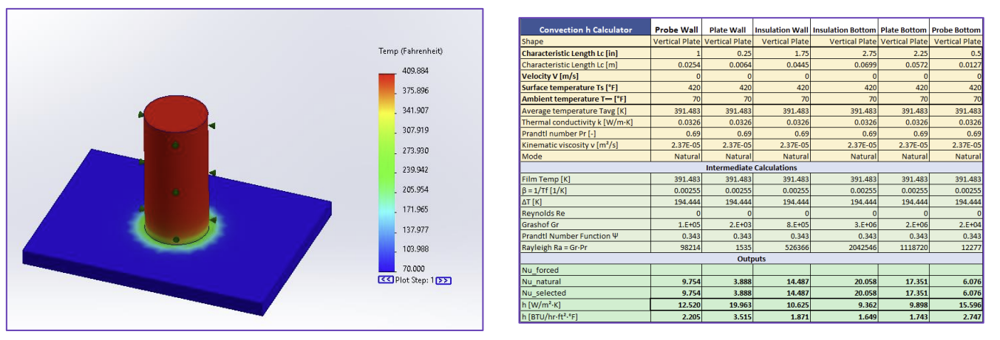
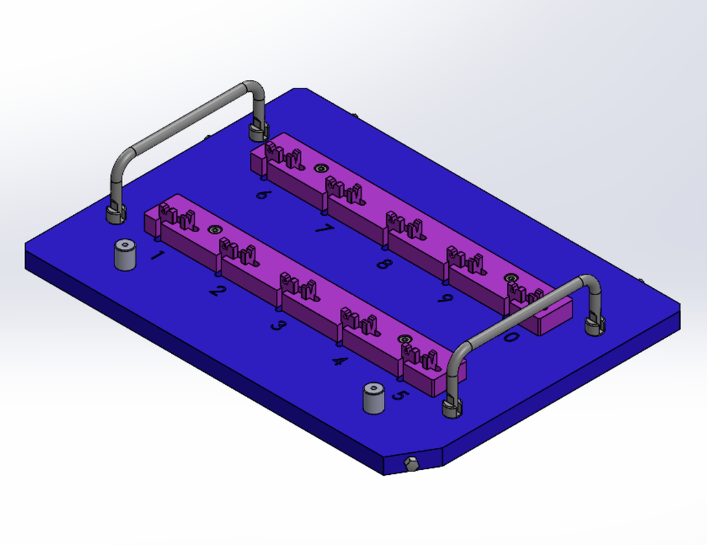
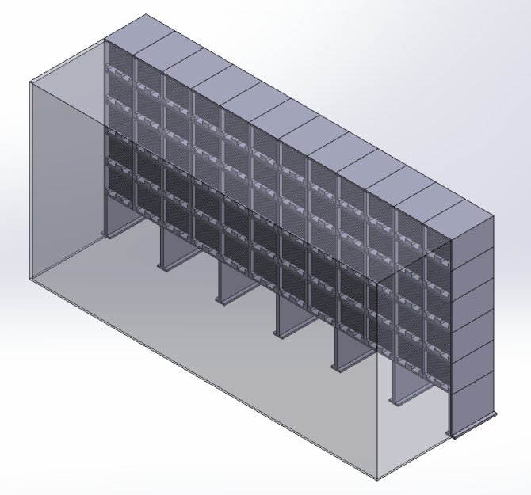
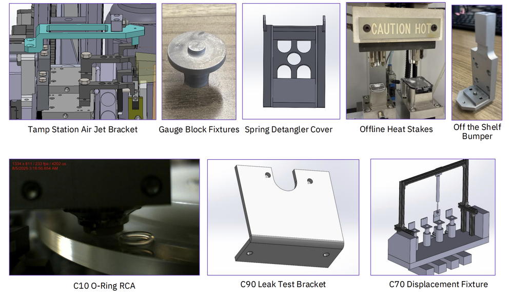

Insulet Corporation: GEE Mechanical Design Co-op
Background
Insulet Corporation manufactures the Omnipod, a tubeless insulin delivery system for people with diabetes. I worked as a Mechanical Design Co-op on the Global Equipment Engineering (GEE) team, supporting manufacturing operations across multiple production lines. My work ranged from designing custom fixtures and tooling to thermal simulation and facility-level storage planning. Over the six months, I completed four main projects and contributed to dozens of smaller design tasks across the plant.
Heat StakeThermal Simulation
My first major project was building a thermal simulation of a heat stake assembly used on the production line. The goal was to model the assembly in SolidWorks Thermal Simulation and match the predicted probe tip temperatures to actual line measurements. This required learning heat transfer fundamentals on the job, building a convective heat transfer coefficient calculator in Excel to determine boundary conditions for each surface, and iterating on the model until the simulation results matched real-world data. The finished model gave the team a theoretical baseline for evaluating potential improvements to the heat stake process.

Battery Spring Pallet Loader Cover
Springs on the battery spring assembly machine (BSAM) rails were jumping out onto the deck plate during operation. I designed a cover assembly to contain them, using a mix of off-the-shelf and custom fabricated components while keeping the design lightweight and easy to remove for maintenance access. I created the full assembly in SolidWorks with formal drawings, had the parts fabricated in-house, and collaborated with the maintenance team to get the covers installed on all four production lines.

Antenna Prototype Inspection Fixture
I designed a high-precision inspection fixture to allow Insulet's incoming inspection lab to measure critical dimensions on a new Omnipod antenna prototype. The fixture needed to present two key dimensions to the inspection software while securely holding the part. I designed and built both a 2-nest version for initial use and a 10-nest version for higher throughput lot processing, with the goal of shortening inspection cycle time. Both assemblies were delivered to the inspection lab for ongoing use.

Automated Kanban Storage System
The largest-scope project was creating the framework for an automated Kanban storage system for Plant 4's cleanroom. I built a storage requirements calculator in Excel that takes a pod production target and cell-specific Kanban data (pulled from Spotfire) and outputs the required number of storage columns, tray stacks, and overall footprint. I then designed a full CAD model of the storage system in SolidWorks, accounting for lifting clearance, tray stack heights, and the goal of utilizing vertical space in the cleanroom that was underused by the existing manual system.

Other Contributions
Beyond the main projects, I worked on a wide range of smaller design and support tasks across the plant: fixture designs (gauge blocks, displacement fixtures, leak test brackets, spring detangler covers), root cause analysis investigations, tooling installations, mechanical drawing revisions, and production line debug support. This constant variety gave me exposure to nearly every production cell and a strong understanding of how design decisions affect manufacturing on the floor.
